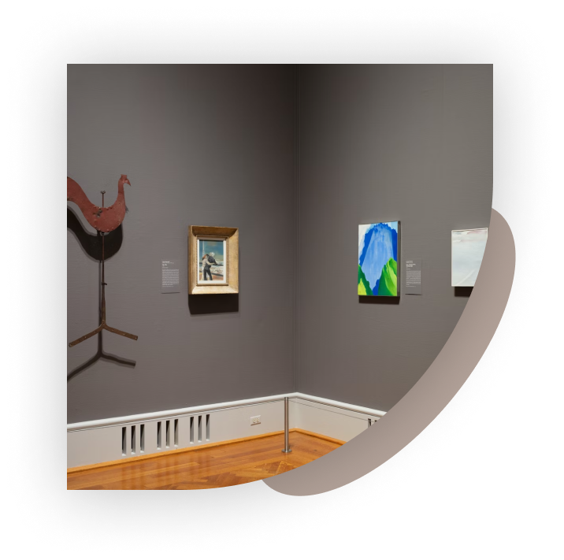
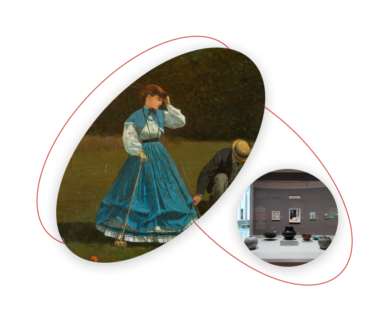

LAMDA

AMERICAN
GOTHIC
THE QA ARTIST
Grant Wood
Grant Wood, famous for his representations of the Midwest—of which the Art Institute’s American Gothic (1930.934) is his most recognizable example—intended The Pump to be an illustration for Sinclair Lewis’s novel Main Street (1920).
American Gothic
This image of a contemporary water pump would have been a perfect fit for Lewis’s novel about life in a midwestern town. The drawing was given to the Art Institute by Carter Manny, Jr., who received it as a high school graduation gift from the artist in 1937.
New gallery
New gallery
1631
Rembrandt Harmensz. van Rijn
Old Man with a Gold Chain
This evocative character study is an early example of a type of subject that preoccupied the great Dutch master Rembrandt van Rijn throughout his long career. Although his large output included landscapes, genre paintings, and the occasional still life.
1631
Rembrandt Harmensz. van Rijn
Old Man with a Gold Chain
This evocative character study is an early example of a type of subject that preoccupied the great Dutch master Rembrandt van Rijn throughout his long career. Although his large output included landscapes, genre paintings, and the occasional still life.
1631
Rembrandt Harmensz. van Rijn
Old Man with a Gold Chain
This evocative character study is an early example of a type of subject that preoccupied the great Dutch master Rembrandt van Rijn throughout his long career. Although his large output included landscapes, genre paintings, and the occasional still life.
All gallery

Multiple Modernisms in the Americas
For many years these works, along with other beloved paintings and sculptures, have been located in galleries 262–65 in the Rice Building. We in Arts of the Americas recently re-envisioned and reinstalled these galleries, seeking to present art of North America in a more lively and engaging manner.
Our intention was to contextualize old favorites in new ways, introduce a greater variety of objects, and offer more complex and interesting narratives that highlight the true breadth and depth of our collection.
Our intention was to contextualize old favorites in new ways, introduce a greater variety of objects, and offer more complex and interesting narratives that highlight the true breadth and depth of our collection.
Andrew James associate curator
With this reinstallation, it was important to bring works by Native American artists into these galleries to create a more inclusive, expansive, and simply more accurate presentation of American art. These additions do not replace our dedicated gallery of Native and Indigenous art in the Morton Wing, but rather are a complement to it.
